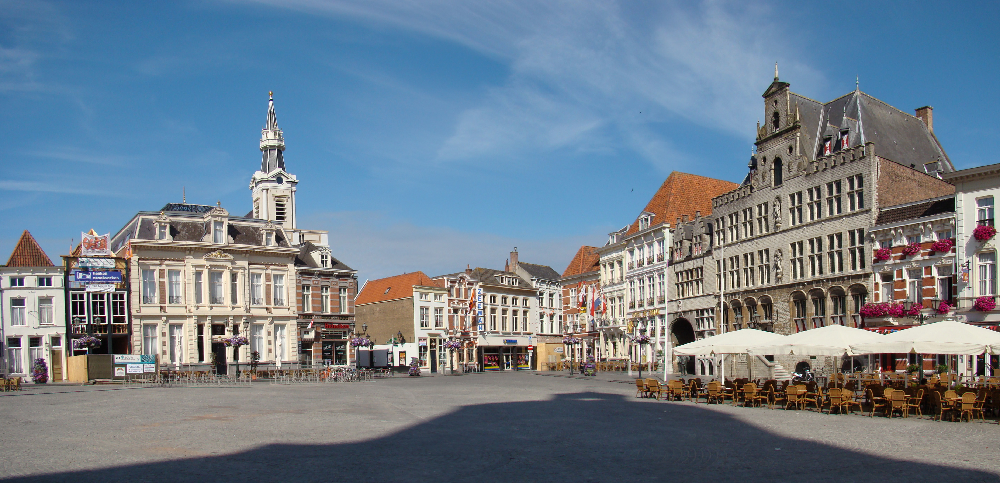

Voorstel voor het oprichten van een gemeentebreed Ondernemersfonds Bergen op Zoom
Hier vindt u alle informatie over het voorstel om in Bergen op Zoom tot een gemeentebreed ondernemersfonds te komen: de aanleiding, de opgaven voor Bergen op Zoom, hoe samenwerking op bedrijventerreinen, in het centrum en in het buitengebied eruit kan zien, en antwoorden op veelgestelde vragen.
In Bergen op Zoom wordt onderzocht of een gemeentebreed ondernemersfonds wenselijk is. Een ondernemersfonds is een fonds vóór en dóór ondernemers en maatschappelijke organisaties (onderwijs, zorg, sport, cultuur). Het biedt een stabiele, langjarige financiële basis om samen te werken aan een sterker vestigingsklimaat. In meer dan vijftig Nederlandse gemeenten bestaat al zo'n fonds, onder meer in Utrecht, Helmond, Dordrecht en Heerlen.
Sinds februari 2026 werkt een brede initiatiefgroep van ondernemersverenigingen, bedrijventerreinen en maatschappelijke organisaties samen aan een voorstel. Inmiddels ligt er een uitgewerkt voorstel, met een advies aan de gemeenteraad om het fonds per 1 januari 2027 in te voeren. Het definitieve besluit vindt plaats op 12 november 2026, bij de begrotingsbehandeling van de gemeenteraad.
In de initiatiefgroep zijn de bedrijventerreinen TNP, Oude Molen en LMM vertegenwoordigd, samen met ondernemersvereniging Sterck (binnenstad), MKB Bergen op Zoom, VNO-NCW Brabantse Wal, onderwijsinstelling Curio, ziekenhuis Bravis, zorginstelling Tante Louise, ZLTO, Koninklijke Horeca Nederland afdeling Bergen op Zoom, de dorpswinkelcentra (via Winkelhart Halsteren) en individuele ondernemers. Sinds de start denken zij actief mee over het voorstel. Die betrokkenheid heeft geleid tot een groeiend enthousiasme. De initiatiefgroep moedigt ondernemers en organisaties in Bergen op Zoom aan om actief mee te denken.
Deze website is bedoeld om ondernemers, vastgoedeigenaren en maatschappelijke organisaties in Bergen op Zoom te informeren over het voorstel: waarom een ondernemersfonds, wat de belangrijkste opgaven zijn, hoe het fonds is opgebouwd en wat het voor u kan betekenen.
Deze website is een verlengstuk van de initiatiefgroep om informatie te delen en in contact te komen met ondernemers en vastgoedeigenaren. Heeft u een vraag die hier niet beantwoord wordt? Neem dan gerust contact op (zie Contact).
Gebruik de pagina's hieronder (of de navigatiebalk) om verder te lezen.
Wilt u meer weten over wat het fonds voor uw gebied kan betekenen? Neem contact op.
Contact